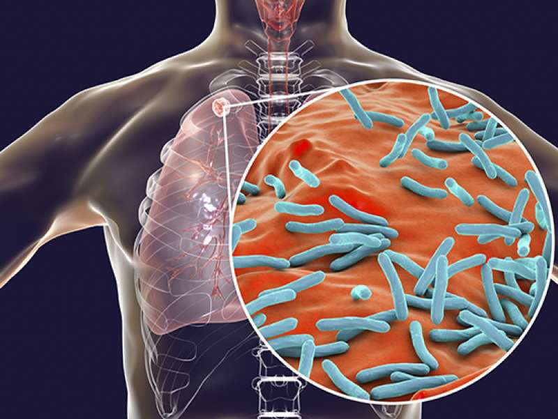
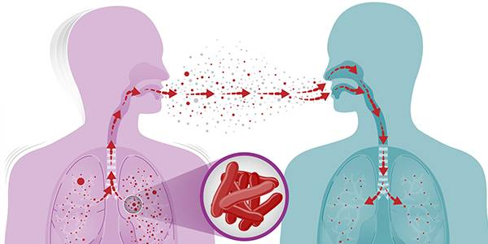

TUBERCULOSIS It is an airborne disease caused by the bacterium "Mycobacterium Tuberculosis" most often affects the lungs, but can attack body parts such as kidney, spine and brain.

TYPES
Latent Tuberculosis Infection (LTBI)
Persons with LTBI have M. tuberculosis in their bodies, but do not have TB disease and cannot spread the infection to other people.
Active Tuberculosis Infection
It is infectious and may spread the bacteria to other people.
The tubercle bacilli overcome the immune system and multiply, resulting in progression from LTBI to active TB disease.
SIGNS AND SYMPTOMS
Symptoms of active TB disease in the lungs usually begin gradually and worsen over a few weeks. They may include:
Coughing up blood or mucus
Chest pain
Pain with breathing or coughing
Fever
Chills
Night sweats
Weight loss
Not wanting to eat
Tiredness
Not feeling well in general
Symptoms of active TB disease in Infants. A baby may have symptoms from swelling in the fluid around the brain or spinal cord, including:
Being sluggish or not active
Unusually fussy
Vomiting
Poor feeding
Bulging soft spot on the head
Poor reflexes
TRANSMISSION OF TUBERCULOSIS
TB is spread from person to person through the air. The dots in the air represent droplet nuclei containing tubercle bacilli.
Transmission occurs when a person inhales droplet nucleus containing M. tuberculosis, and the droplet nuclei traverse the mouth or nasal passages, upper respiratory tract, and bronchi to reach the alveoli of the lungs.
TB is NOT spread by shaking someone's hand, sharing food or drink, touching bed linens or toilet seats, sharing toothbrushes, kissing

PHATOGENESIS
1. Droplet nuclei containing tubercle bacilli are inhaled, enter the lungs, and travel to the alveoli.
2. Tubercle bacilli multiply in the alveoli
3. A small number of tubercle bacilli enter the bloodstream and spread throughout the body. The tubercle bacilli may reach any part of the body, including areas where TB disease is more likely to develop (such as the brain, larynx, lymph node, lung, spine, bone, or kidney).
4. Within 2 to 8 weeks, special immune cells called macrophages ingest and surround the tubercle bacilli. The cells form a barrier shell, called a granuloma, that keeps the bacilli contained and under control (LTBI).
5. If the immune system cannot keep the tubercle bacilli under control, the bacilli begin to multiply rapidly (TB disease). This process can occur in different areas in the body, such as the lungs, kidneys, brain, or bone.
PREVENTION
Seek medical attention if you have symptoms as early treatment for TB can help stop the spread of disease and improve your chances of recovery.
Get tested for TB infection if you are at increased risk, such as if you have HIV or are in contact with people who have TB in your household or your workplace.
If prescribed treatment to prevent TB, complete the full course.
If you have TB, practice good hygiene when coughing, including avoiding contact with other people and wearing a mask, covering your mouth and nose when coughing or sneezing, and disposing of sputum and used tissues properly.
Bacille Calmette-Guérin (BCG) vaccine is given to babies or small children to prevent TB. The vaccine prevents TB outside of the lungs but not in the lungs.
TREATMENT
Pregnant women- The initial treatment regimen should consist of INH, RIF, and EMB. Streptomycin should not be used because it is documented to have harmful effects on the human fetus.
Breast-feeding women- Pyridoxine (vitamin B6) supplementation (25 mg/ day) is recommended for all women taking INH who are either pregnant or breast-feeding.
Infants and children- should be treated with the regimens recommended for adults, with the exception that EMB is not used routinely in children.In infants, TB is much more likely to disseminate; therefore, treatment should be started as soon as the diagnosis is suspected.
HIV-infected persons- patients with HIV-related TB disease should be treated with a regimen including a rifamycin for the full course of TB disease treatment, unless the isolate is resistant to the rifamycins or the patient has a severe side effect that is clearly due to the rifamycins.